화학분석기사(구) (2009-05-10 기출문제)
1과목: 일반화학
1. 단풍나무의 수액은 물에 설탕이 3.0wt%로 녹아 있는 용액으로 간주할 수 있다. 설탕이 수용액에서 해리되지 않으며 단풍나무는 년간 12갤론의 수액을 생사나한다고 할 때, 이 부피의 수액에 들어 있는 설탕은 약 몇 g인가? (단, 1갤론은 3.785L이고 수액의 밀도는 1.010g/cm3이다.)
- 1.16×103
- 1.38×103‘
- 1.64×103
- 1.82×103
(정답률: 78%)

2. 유기화합물의 작용기 구조를 나타낸 것 중 틀린 것은?
- 케톤:

- 아민:

- 알데히드:

- 에스테르:

(정답률: 68%)
3. 화학식과 그 명칭을 잘못 연결한 것은?
- C3H8-프로판
- C4H10-펜탄
- C6H14-헥산
- C8H18=옥탄
(정답률: 75%)
4. 다음과 같은 반응에서 압력을 증가시키면 어떻게 되는가?
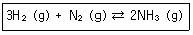
- 평형이 왼쪽으로 이동
- 평형이 오른쪽으로 이동
- 평형이 이동하지 않음
- 평형이 양쪽으로 이동
(정답률: 77%)
5. 표준상태에서 SB 15g이 다음 반응식과 같이 완전 연소될 때 생성된 이산화황의 부피는 약 몇 L인가? (단, SB의 물질량은 256.48g/mol이다.)
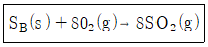
- 0.47
- 1.31
- 4.7
- 10.5
(정답률: 68%)
6. “액체 속에 들어 있는 기체의 용해도는 용액에 가해지는 기체의 압력에 비례한다.”는 어떤 법칙인가?
- Hess의 법칙
- Raoult의 법칙
- Henry의 법칙
- Nernst의 법칙
(정답률: 74%)
7. 다음 반응에 대한 평형상수 Kc를 옳게 나타낸 것은?
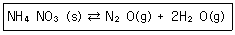
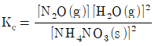
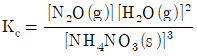
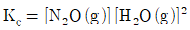
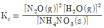
(정답률: 76%)
8. 다음의 반응에서 산화되는 물질은 무엇인가?
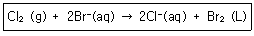
- Br-
- Cl2
- Br2
- Cl2, Br2
(정답률: 79%)
9. 17Cl 의 전자배치를 옳게 나타낸 것은?
- [Ar]3s23p6
- [Ar] 3s23p5
- [Ne]3s23p6
- [Ne]3s23p5
(정답률: 74%)
10. 6M NaOH 용액 500mL 를 만들려면 NaOH 몇 g 이 필요한가?
- 60
- 120
- 180
- 240
(정답률: 72%)
11. Ca(HCO3)2에서 탄소의 산화수는 얼마인가?
- +2
- +3
- +4
- +5
(정답률: 76%)
12. 다음 중 반응이 일어나기가 가장 어려운 것은?
- F2 + I-→
- I2 + Cl-→
- Cl2 + Br-→
- Br2 + I-→
(정답률: 77%)
13. 유기화합물에 관한 설명 중 틀린 것은?
- 포름알데히드를 산화시키면 글리세린이 된다.
- 에틸에테르는 휘발성 액체로 물보다 가볍다.
- 메탄올을 산화시면 포름알데히드가 된다.
- 알데히드는 카르보닐기를 가진다.
(정답률: 65%)
14. 노르말 알칸(normal alkane)의 일반식은?
- CnH2+1
- CnH2n
- CnH2n+2
- CnH2n-2
(정답률: 71%)
15. 다음 중 산ㆍ염기에 관한 설명으로 옳은 것을 모두 나열한 것은?
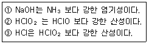
- ①, ③
- ①, ②
- ②, ③
- ①, ②, ③
(정답률: 43%)
16. 이온에 대한 설명 중 틀린 것은?
- 전기적으로 중성인 원자가 전자를 얻거나 잃어버리면 이온이 만들어진다.
- 원자가 전자를 잃어버리면 양이온을 형성한다.
- 원자가 전자를 받아들이면 음이온을 형성한다.
- 이온이 만들어질 때 핵의 양성자 수가 변해야 한다.
(정답률: 79%)
17. 다음 중 극성 분자인 것은?
- CI2
- CH4
- CO2
- NH3
(정답률: 75%)
18. Uranium 동위원소는 중성자와 충돌하면 다음과 같은 핵분열 반응을 일으킨다고 할 때 M에 해당되는 입자는?
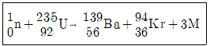
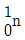
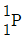
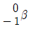
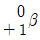
(정답률: 70%)
19. NaOH 용액의 [OH-] 농도를 측정하였더니 2.9 × 10-4M이였다. 이 용액의 PH 값은?
- 2.9
- 3.54
- 10.46
- 11.1
(정답률: 72%)
20. Li, Ba, C, F의ㆍ원자반지름(pm)이 72, 77, 152, 222 중 가각 어느 한가지씩의 값에 대응한다고 할 대 그 값이 옳게 연결된 것은?
- Ba-72pm
- Li-152pm
- F-77pm
- C-222pm
(정답률: 66%)
2과목: 분석화학
21. 갈비니 전지에 대한 설명 중 틀린 것은?
- 갈바니 전지에서는 산화ㆍ환원 반응이 모두 일어난다.
- 염다리를 사용할 수 있다.
- 자발적인 화학반응이 전기를 생성한다.
- 자발적 반응이 일어나는 경우 일반적으로 전위차 값을 음수로 나타낸다.
(정답률: 80%)
22. 중크롬산 적정에 대한 설명으로 트린 것은?
- 중크룸삼 이온이 분석에 응용될 때 초록색의 크롬(Ⅲ)이온으로 환원된다.
- 중크룸산 적정을 일반적으로 염기성 용액에서 이루어진다.
- 중크룸산칼륨 용액을 안정한다.
- 시약급 중크룸산칼륨은 순수하여 표준용액을 만들 수 있다.
(정답률: 70%)
23. 산과 염기에 대한 설명 중 틀린 것은?
- 산은 양성자를 내어주는 물질이다.
- 짝염기는 산이 양성자를 내놓을 때 생기는 화학종이다.
- 염은 산과 염기가 반응하여 생기는 생선물이다.
- 짝산은 염기가 양성자를 내놓을 때 생기는 화학종이다.
(정답률: 65%)
24. 완충용액에 대한 설명 중 틀린 것은?
- 완충용액은 약염기와 그 짝산으로 만들 수 있다.
- 완충용량을 산과 그 짝염기의 비가 같을 때 가장 크다.
- 완충용액의 ph는 이온세기와 온도에 의존하지 않는다.
- 완충용량이 클수록 ph변화에 대한 용액의 저항은 커진다.
(정답률: 82%)
25. 다음의 전기화학전지를 선 표시법으로 옳게 표시한 것은?
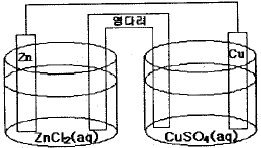
- ZnCl2(aq)|Zn(s)║CuSO4(aq)|Gu(s)
- Zn(s)|ZnCl2(aq)║Cu(s)|CuSO4(aq)
- CuSO4(aq)|Cu(s)║Zn(s)|ZnCl2(aq)
- Zn(s)|ZnCl2(aq)║CuSO4(aq)|Cu(s)
(정답률: 81%)
26. 활동도 및 활동도계수에 대한 설명 중 옳은 것은?
- 활동도는 농도나 온도에 관계없이 일정하다.
- 이온세기가 매우 작은 묽은 용액에서 활동도계수는 1에 가까운 값은 갖는다.
- 활동도는 활동도계수를 농도의 제곱으로 나눈 값이다.
- 이온의 활동도계수는 전하량과 이온세기에 비례한다.
(정답률: 84%)
27. 산화ㆍ환원 적정에서 사용되는 MnO4- 용액에 대한 설명 중 틀린 것은?
- 어두운 곳에 보관해야 한다.
- 모든 산 용액에서 안정하다.
- 용액 내에서 고체가 보이면 거르기와 재표준화를 하여야 한다.
- MnO4- 용액은 끓어서는 안된다.
(정답률: 71%)
28. 산성 용액에서 과망간산이온의 환원반응식으로 옳은 것은?
- MnO4-+6H++3e-⇄MnO(s)+3H2O
- MnO4-+8H++5e-⇄Mn2++4H2O
- MnO4-+6H++5e-⇄MnO(s)+3H2O
- MnO4-+8H++3e-⇄Mn4++4H2O
(정답률: 70%)
29. HCI 용액을 표준화하기 위해 사용한 Na2CO3가 완전히 건조되지 않아서 물이 포함되어 있다면 이것은 사용하여 제조된 HCI 표준용액의 농도는?
- 참값보다 높아진다.
- 참값보다 낮아진다.
- 참값과 같아진다.
- 참값의 1/2이 된다.
(정답률: 85%)
30. CH3COOH + H2O⇄H3O++CH3COO-의 해리상수 Ka를 옳게 나타낸 것은?
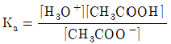
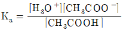
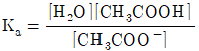
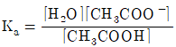
(정답률: 84%)
31. 0.3M La(NO3)3 용액의 이온세기를 구하면 몇 M인가?
- 1.8
- 2.6
- 6.2
- 6.3
(정답률: 76%)
32. 염화수은(I) Hg2Cl2의 용해도곱 상수를 1.2 × 10-18라 할 때 순수한 물에 염화수은(I)을 포화시키면 CI-의 농도는 약 몇 N인가?
- 6.7 × 10-8
- 1.34 ×10-7
- 6.7 × 10-7
- 1.34 × 10-6
(정답률: 28%)
33. Cd(s)+2Ag+⇄Cd2++2Ag(s) 의 화학 반응에서 반쪽 반응식과 그에 따른 표준환원전위 E°가 다음과 같을 때 산화제(oxidizing agent)는 무엇인가?
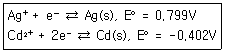
- Cd(s)
- Ag+
- Cd2+
- Ag(s)
(정답률: 79%)
34. 어떤 삼양성자산(triprox acid)이 수용액에서 다음과 같은 평형을 가질 때 pH 9.0에서 가장 만이 존재하는 화학종은?
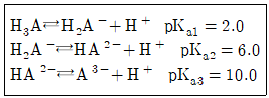
- H3A
- H2A-
- HA2-
- A3-
(정답률: 69%)
35. 다음의 두 평형에서 전하균형식(charge balance equation)을 옳게 표현한 것은?
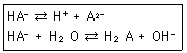
- [H+]=[HA-]+[A2-]+[OH-]
- [H+]=[HA-]+2[A2-]+[OH-]
- [H+]=[HA-]+4[A2-]+[OH-]
- [H+]=2[HA-]+[A2-]+[OH-]
(정답률: 78%)
36. 하이포아염소산나트륨의 수용액에서 [OCl-]/[HOCl]의 비가 0.047일 때, 이 용액의 pH는? (단, HOCl의 pKa는 7.53이다.)
- 1.3
- 4.9
- 6.2
- 7.5
(정답률: 72%)
37. 다음 중 단위를 잘못 나타낸 것은?
- 주파수:Hz
- 힘:N
- 일률:J
- 전기량:C
(정답률: 71%)
38. 칼슘이온 Ca2+을 무게분석을 활용하여 정량하고자 한다. 이 때 효과적으로 사용할 수 있는 음이온은?
- C2O42-
- SO42-
- Cl-
- SCN-
(정답률: 68%)
39. 250Gbyte는 50Mbyte의 몇 배인가?
- 50배
- 500배
- 5000배
- 50000배
(정답률: 68%)
40. 0.20M의 Mg2+ 50mL를 0.20M의 EDTA로 적정한다. 당량점(50mL)에서 Mg2+의 농도는? (단, 적정 pH 조건에서 Mg2+와 EDTA 반응의 조건형성상수 Kf'는 1.0×109이다.)
- 1.0×10-8 M
- 1.0×10-7 M
- 1.0×10-6 M
- 1.0×10-5 M
(정답률: 20%)
3과목: 기기분석I
41. 다음 중 신호-대-잡음비를 개선하는 방법이 아닌 것은?
- 토막기 증폭기(chopper amplifier)를 사용한다.
- 전자기 복사선에 의한 잡음을 줄이기 위해 접지를 한다.
- 고주파 통과 애널로그 필터를 사용하여 열적 잡음을 감소시킨다.
- 변환기 회로에서 발생하는 잡음을 줄이기 위해 시차 증폭기를 이용한다.
(정답률: 49%)
42. 다음 중 레이저 발생의 주요 매커니즘과 관계없는 것은?
- 증폭
- 펌핑
- 흡수
- 자발 방출
(정답률: 49%)
43. 가시광선 영역의 스펙트럼을 측정하고자 한다. 이 때 사용하는 광원이 아닌 것은?
- D2 램프
- 텅스텐 램프
- 속빈 음극등
- 레이저
(정답률: 55%)
44. 원자분광법에서 발생하는 선 넓힘의 원인이 아닌 것은?
- 불확정성 효과
- Doppler 효과
- 용매 효과
- 압력 효과
(정답률: 75%)
45. 적외선 분광법에서 지문영역(fingerprint region)의 특성에 대한 설명으로 틀린 것은?
- 지문영역의 파장범위는 약 8~14μm이다.
- 지문영역의 파수점위는 약 10~200cm-1이다.
- 화합물들의 지문영역 스펙트럼이 일치하면 같은 화합물이라고 판전할 수 있다.
- 지문영역의 스펙트럼으로부터 황산염, 인산염, 질산염과 같은 무기물의 구조를 확인할 수 있다.
(정답률: 54%)
46. 다음 중 원자분광법의 원자화방법이 아닌 것은?
- 불꽃
- 전열증발화
- 전기 아크
- 초음파 분무화
(정답률: 68%)
47. 궤도함수 3p와 3s 사이의 에너지 차이는 2.107eV이다. 3s 전자를 3p 상태로 들뜨게 하는데 필요한 복사선의 파장은 약 몇 nm인가? (단, 1eV는 1.60×10-19J, 플랭크상수(h)는 6.63×10-34Jㆍs, 빛의 속도는 3.0×108m/s이다.)
- 550
- 570
- 590
- 610
(정답률: 68%)
48. 광도법 적정에서 시료(analyte), 적정액(titrant), 생성물(product)의 몰흡광계수를 각각 εa, εt, εp로 표시한다. 다음 중 εa=εt=0이고, εp＞0인 경우의 적정곡선을 가장 잘 나타낸 것은? (단, 흡광도는 증가된 부피에 대하여 보정되어 표시한다.)
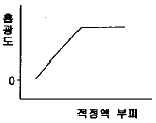
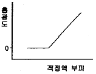
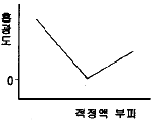
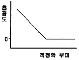
(정답률: 50%)
49. Cr6+는 디페닐카르바지드로 발색시켜 정량한다. Cr6+의 농도가 1mg/L이고, 셀의 길이가 1cm이며, 흡광도가 0.5769이면 몰흡광계수(L mol-1cm-1)는 약 얼마인가? (단, Cr의 원자량은 52이다.)
- 0.577
- 30
- 577
- 30000
(정답률: 61%)
50. 양성자 NNR 분광법에서 사용할 수 있는 가장 적당한 용매는?
- CDCl3
- CHCl3
- C6H6
- H3O+
(정답률: 59%)
51. 화석탐사선(Mars pathfinder)의 착륙지점 근처에 있는 암석과 토양에 있는 나트륨보다 무거운 원소들을 정량 분석하기 위하여 사용된 분석법은?
- 유도결합플라스마 원자방출분광법
- X선형광법
- 원자흡수분광법
- 적외선분광법
(정답률: 66%)
52. 적외선흡수분광법에서 흡수봉우리의 파수(cm-1)가 가장 큰 작용기는?
- C=0
- C-0
- 0-H
- C=C
(정답률: 62%)
53. 분석기기에서 발생하는 잡음 중 열적잠음(thermal noise)에 대한 설명으로 틀린 것은?
- 온도가 올라가면 증가한다.
- 저항이 커지면 증가한다.
- 백색 잡음(white noise)이라고도 한다.
- 주파수를 낮추면 감소한다.
(정답률: 68%)
54. 핵자기공명(NMR)분광기에서 13C를 사용하는 이유에 대한 설명으로 틀린 것은?
- 13C의 자연계 존재비가 매우 낮다.
- 13C핵의 자기회전 비율이 수소보다 작아서 13C핵은 proton보다 낮은 주파수에서 공명한다.
- 탄소간 동종핵의 스핀-스핀 짝지음이 일어나지 않는다.
- 13C는 화학적 이동이 없기 때문에 이용한다.
(정답률: 59%)
55. 원자분광법에서의 고체 시료의 도입에 대한 설명으로 틀린 것은?
- 원자화장치 속으로 시료를 직접 수동으로 도입할 수 있다.
- 미세 분말 시료를 슬러리로 만들어 분무하기도 한다.
- 시료 분해 및 용해 과정이 없어서 용액시료 도입보다 정확도가 높다.
- 보통 연속신호 대신 불연속신호가 얻어진다.
(정답률: 74%)
56. 분자분광학에서 형광세기 및 효율은 여러 가지의 영향을 받는다. 다음 중 형광효율에 영향을 미치는 요소가 아닌 것은?
- 전자전이형태(electronic transition type)
- 분자구조의 견고함(structural rigidity)
- 용액의 온도(solution temperature)
- 용액의 양(solution quantity)
(정답률: 69%)
57. 은 과녁의 X-선관에 62000볼트(V)를 가했을 때 생성되는 연속 X-선의 단파장 한계(short-wavelength limit)는 몇 옹스트롬(Å)인가?
- 0.2
- 0.4
- 0.6
- 0.8
(정답률: 25%)
58. 양성자의 자기 모멘트 배열을 반대방향으로 변화시키는데 100Hz의 라디오 주파수가 필요하다면 양성자 NMR의 자석의 세기는 약 몇 T인가? (단, 양성자의 자기회전비율은 3.0×108T-1s-1이다.)
- 2.1
- 4.1
- 13.1
- 23.1
(정답률: 53%)
59. 분자의 형광 및 인광에 대한 설명으로 틀린 것은?
- 형광은 들뜬 단일항 상태에서 바닥의 단일항 상태에로의 전이이다.
- 인광은 들뜬 삼중항 상태에서 바닥의 단일항 상태에로의 전이이다.
- 인광은 일어날 가능성이 낮고 들뜬 삼중항 상태의 수명은 꽤 길다.
- 인광에서 스핀이 짝을 이루지 않으면 분자는 들뜬 단일항 상태로 있다.
(정답률: 83%)
60. 유도쌍 플라스마 질량분석법(ICPMS)에서의 매트릭스효과에 대한 설명으로 옳은 것은?
- 분석물신호의 증가의 원인이 된다.
- 일반적으로 낮은 농도의 공존원소에서 나타난다.
- 약 500~1000μg보다 묽은 농도에서 크게 나타난다.
- 분석물질과 같은 질량과 이온화에너지를 갖는 내부표준물질을 가해서 최소화할 수 있다.
(정답률: 63%)
4과목: 기기분석II
61. HPLC에서 역상(reversed-phase)크로마토그래피 시스템을 가장 잘 나타낸 것은?
- 정지상이 극성이고 이동상이 비극성인 시스템
- 이동상이 극성이고 정지상이 비극성인 시스템
- 분석물질이 극성이고 정지상이 비극성인 시스템
- 정지상이 극성이고 분석물질이 비극성인 시스템
(정답률: 72%)
62. 시료는 주로 높은 온도에서 기체 상태로 만들어져 사용하며 토막내기(fragmentation)가 가장 잘 일어나 많은 봉우리가 생기므로 분석물들을 명확하게 확인할 수 있으나 분자-이온 봉우리가 없어져 분석물의 분자량을 알지 못하게 할 수도 있는 이온화 방법은?
- 장 이온화(FI:field ionization)
- 화학 이온화(CI:chemical ionization)
- 전자 충격 이온화(EI:electron impact ionization)
- 매트릭스-지원 레이저 탈착/이온화(MALDI:matrix-assisted laser desorption/ionization)
(정답률: 81%)
63. 30cm의 컬럼을 이용하여 물질 A와 B를 분리할 때 머무름시간이 각각 16.40분과 17.63분이었다. A와 B의 봉우리 밑 나비는 1.11분과 1.21분이었다. 컬럼의 성능을 나타내는 컬럼의 평균단수(N)와 단높이(H)는 각각 얼마인가?
- N=3.44×103, H=8.7×10-3cm
- N=1.72×103, H=8.7×10-3cm
- N=3.44×103, H=19.4×10-3cm
- N=1.72×103, H=19.4×10-3cm
(정답률: 68%)
64. 혼합물을 얇은층크로마토그래피(TCL)에서 전개시킨 결과 용매는 출발점에서부터 10.0cm를 이동하였고, 한 물질의 spot은 7.0cm를 이동하였다. 이 물질의 지연지수 Rf값은 얼마인가?
- 0.7
- 1.4
- 7
- 10
(정답률: 72%)
65. 중합체를 분석한 시차 열법분석(DTA)에 대한 설명으로 틀린 것은?
- 시차 열법분석은 시료와 기준물을 가영하면서 이 두 물질의 온도 차이를 온도 함수로 측정하는 방법이다.
- 시차 열분석도에서 봉우리 면적은 물리ㆍ화학적 엔탈피 변화에만 관계된다.
- 시차 열법분석에서 유리 전이온도에서 기준선의 변화는 상평형에 른 열용량의 변화에 기인된 것이다.
- 중합체의 결정형성은 발열과정으로서 시차 열분석도에서 최대 봉우리로 나타난다.
(정답률: 55%)
66. 질량분석기로 C2H4+(MW=28.0313)과 CO+(MW=27.9949)의 봉우리를 분리하는데 필요한 분리능은 약 얼마인가?
- 770
- 1170
- 1570
- 1970
(정답률: 74%)
67. 질량분석법에는 질량분석기가 이온발생원에서 생성된 이온을 질량/전하비에 따라 분리한다. 질량분석기로 사용되지 않는 것은?
- 사중극 질량분석기(Quadrupole mass Spectrometer)
- 이중 초점 섹터분석기(Double-focusing Sector Spectrometer)
- 비행시간형 분석기(Time-of-flight Spectrometer)
- 단색화 분석기(Monochromator Spectrometer)
(정답률: 68%)
68. 유도결합플라스마질량분석법(ICPMS)에서 스펙트럼의 방해에 영향을 주지 않는 화학종은?
- 동중핵이온(isobaric ion)
- 다원자 이온(polyatomic ion)
- 이중 하전 이온(doubly charhed ion)
- 중성의 야르곤 원자(neutral argon atom)
(정답률: 75%)
69. 고성능액체크로마토그래피에서 분리효율을 높이기 위하여 사용하는 방법으로 극성이 다른 2~3가지 용매를 선택하여 그 조성을 연속적으로 혹은 단계적으로 변화하며 사용하는 방법은?
- 기울기 용리(gradient elution)
- 온도 프로그램(temperature programming)
- 분배 브로마토그래피(partition chromatography)
- 역상 크로마토그래피(revwesed-phase chromatography)
(정답률: 80%)
70. 열무게법(TGA)에 대한 설명으로 틀린 것은?
- 열무게법은 탈수나 분해를 포함하는 전이를 온도나 시간의 함수로서 질량감소를 측정한다.
- 높은 온도에서는 물리적 및 화학적 결합이 형성되거나 깨어짐으로서 질량의 변화가 나타난다.
- 열무게법에서 측정하는 대부분의 시료의 무게는 1~300g 정도가 적당하다.
- 열무게법은 혼합성분 물질의 조성분석, 수분과 휘발분 물질의 결정에 유용하다.
(정답률: 63%)
71. 전압전류법에 이용되는 들뜸 전위신호가 아닌 것은?
- 선형주사
- 시차펄스
- 네모파
- 원형주사
(정답률: 73%)
72. 다음 그래프는 1.0M KNO3와 6.0mM의 K3Fe(CN)6가 녹아 있는 용액에 백금 전극을 이용하여 얻은 순환전압전류곡선이다. b 지점에서 일어나는 전기화학 반응은?
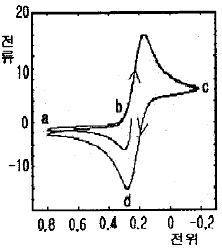
- Fe2+⇄Fe4++e2-
- Fe(CN)64-⇄Fe(CN)62-+e2-
- Fe3++e-⇄Fe2+
- Fe(CN)63-+e-⇄Fe(CN)64-
(정답률: 61%)
73. 전기화학분석법에서 화학적 편극의 원인으로 가장 거리가 먼 것은?
- 전극 반응물의 질량이동이 불충분하여 전류를 제한할 때
- 화학종의 이동속도가 전류유지에 필요한 속도보다 커져서 전류를 제한할 때
- 화학반응에 참여하는 중간 생성물의 생성속도가 흡착으로 인해 전류를 제한할 댇
- 전극에서 산화화학종으로 전자이동 속도가 느려서 전류를 제한할 때
(정답률: 57%)
74. 질량분석법에 대한 설명으로 틀린 것은?
- 분자이온봉우리가 미지시료의 분자량을 알려주기 때문에 구조결정에 중요하다.
- 가상의 분자 ABCD에서 BCD+는 딸-이온(daughter ion)이다.
- 질량 스펙트럼에서 가장 큰 봉우리의 크기를 임의로 100으로 정한 것이 기준봉우리이다.
- 질량 스펙트럼에서 분자이온보다 질량수가 큰 봉우리는 생기지 않는다.
(정답률: 81%)
75. 가상화학종 A가 생성물 P로 환원되는 경우의 선형주사 전압전류 곡선에 대한 설명으로 틀린 것은?
- 미소전극에 걸어준 전위가 음의 값을 가지도록 선형주사 전위의 음극단자에 연결시킨다.
- 선형주사전압전류 곡선은 일반적으로 전압전류파라고도 불리며 S형이다.
- 한계전류는 일반적으로 반응물의 농도에 직접 비례한다.
- 한계전위보다 높은 곳에 있는 전위를 완파전위라 하고 EOVER로 표시한다.
(정답률: 32%)
76. 다음 선표시법으로 나타낸 전지의 전위 값은? (단, Fe3++e-→Fe2+, E0는 0.771V이고, ES.C.E의 값은 0.244V이다.)
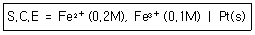
- 0.226V
- 0.509V
- 0.527V
- 0.753V
(정답률: 42%)
77. 폴라로그래피법에서 사용하는 적하수은전극의 특성에 대한 설명으로 틀린 것은?
- 수소의 환원에 대한 과전압이 작다.
- 수은이 쉽게 산화된다.
- 산화전극으로 사용하는데 제한이 크다.
- 재현성이 있는 평균 전류를 얻을 수 있다.
(정답률: 69%)
78. 다음 그림은 액체크로마토그래피에서 널리 이용되는 검출기의 구조이다. 어떤 검출기인가?
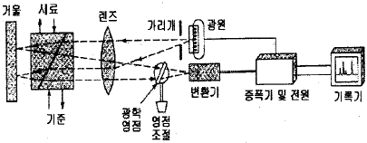
- 적외선흡수 검출기
- 형광 검출기
- 굴절률 검출기
- 전기화학 검출기
(정답률: 80%)
79. 질량분석계의 부분장치 중 진공장치 속에 설치되어 있지 않는 것은?
- 시료도입장치
- 이온화장치
- 검출기
- 신호처리장치
(정답률: 71%)
80. 다음 중 전위차법에서 주로 사용되는 지시전극은?
- 음-염화은 전극
- 칼로멜 전극
- 표준수소 전극
- 유리 전극
(정답률: 52%)
질량 = 부피 x 밀도 = 45.42L x 1.010g/cm3 x 1000cm3/L = 45,942g
이 수액 중 설탕의 질량은 전체 질량의 3.0wt%에 해당한다. 따라서 설탕의 질량은
설탕의 질량 = 전체 질량 x 3.0% = 45,942g x 0.03 = 1,378.26g
따라서 정답은 "1.38×103‘"이다.